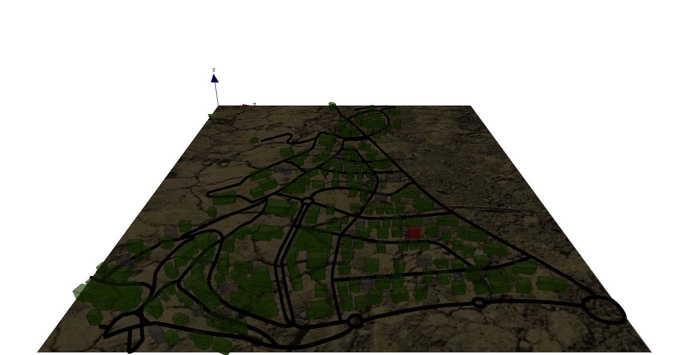

IncrementalModel_step6
6. Multi-Level
This step Illustrates how to define a multi-level model
Formulation
We propose to let the buildings manage what happens when the people are inside buildings. In this context, we will use the multi-level properties of GAMA: when a people agent will be inside a building, it will be captured by it and its species will be modified. It will be not anymore the people agent that will decide when to leave the building, but the building itself.
We will need to:
- define a micro-species of people inside the building species (people_in_buildings)
- define a new variable for the building agent (_people_inbuilding)
- define two new behaviors for building: let_people_leave and let_people_enter
- modify the aspect of the building
- modify some global variables for counting the number of infected people_

Model Definition
building
First, we define a new species called people_in_building inside the building species. Thus, a building could have agents of this species as members and control them. The people_in_building species has for parent the people species, which means that a people_in_building agent has all the properties, aspect and behaviors of a people agent. In our case, we want the once a people agent inside a building, this people agent does nothing. Then, we use the schedules facet of the species to remove the people_in_building from the scheduler.
species building {
...
species people_in_building parent: people schedules: [] {
}
...
}
We define a new dynamic variable for building agent: people_inside that will correspond to the list of people_in_building agents inside the building. Note that we use the syntax -> {...} to make the variable dynamic. However, instead of update that allows a variable to be recomputed at each simulation step, the syntax -> {...} allows the variable to be recomputed each time it is called (and thus avoid outdated problems). To compute this variable, we use the members built-in variable that corresponds to the list of micro-agents captured by the macro-agent.
species building {
...
list<people_in_building> people_inside -> {members collect people_in_building(each)};
...
}
We define a first reflex for the buildings that will be activated at each simulation step and that will allow the building to capture all the people that are inside its geometry and that are not moving (target = nil). Capturing agents means putting them inside its members list and changing their species: here the people agents become people_in_building agents.
species building {
...
reflex let_people_enter {
list<people> entering_people <- people inside self where (each.target = nil);
if not (empty (entering_people)) {
capture entering_people as: people_in_building ;
}
}
....
}
We define a second reflex for the buildings that will be activated at each simulation step and that will allow the building to release some of the people_in_building agents. First, it increments the staying counter of all the people_in_building agents. Then it builds the list of leaving people by testing the same probability as before for all the people_in_building agents. Finally, if this list is not empty, it releases them as people agents (and gives them a new target point).
species building {
...
reflex let_people_leave {
ask members as: people_in_building{
staying_counter <- staying_counter + 1;
}
list<people_in_building> leaving_people <- list<people_in_building>(members where (flip(people_in_building(each).staying_counter / staying_coeff)));
if not (empty (leaving_people)) {
release leaving_people as: people in: world returns: released_people;
ask released_people {
target <- any_location_in (one_of(building));
}
}
}
....
}
At last, we refine the aspect of the buildings: if there is not people inside the building, we draw it with gray color. If the number of people_in_building infected is higher than the number of people_in_building not infected, we draw it in red; otherwise in green.
species building {
...
aspect geom {
int nbI <- members count people_in_building(each).is_infected;
int nbT <- length(members);
draw shape color:nbT = 0 ? #gray : (float(nbI)/nbT > 0.5 ? #red : #green) depth: height;
}
}
global variables
In order to take into account the people that are inside the buildings for the computation of nb_people_infected, we first build the list of people_in_building. As people_in_building is a macro species of building, we cannot compute it directly like for the other species, we then aggregate all the list people_inside of all building in a single list (list_people_in_buildings). Then, we compute the number of infected people as the number of people infected outside the building + the number of people infected inside them.
global {
...
list<people_in_building> list_people_in_buildings update: (building accumulate each.people_inside) where (not dead(each));
int nb_people_infected <- nb_infected_init update: people count (each.is_infected) + (empty(list_people_in_buildings) ? 0 : list_people_in_buildings count (each.is_infected));
...
}
Complete Model
global {
int nb_people <- 500;
float step <- 1 #minutes;
float infection_distance <- 2.0 #m;
float proba_infection <- 0.05;
int nb_infected_init <- 5;
file roads_shapefile <- file("../includes/road.shp");
file buildings_shapefile <- file("../includes/building.shp");
geometry shape <- envelope(roads_shapefile);
graph road_network;
int current_hour update: (cycle / 60) mod 24;
float staying_coeff update: 10.0 ^ (1 + min([abs(current_hour - 9), abs(current_hour - 12), abs(current_hour - 18)]));
list<people_in_building> list_people_in_buildings update: (building accumulate each.people_inside) where (not dead(each));
int nb_people_infected <- nb_infected_init update: people count (each.is_infected) + (empty(list_people_in_buildings) ? 0 : list_people_in_buildings count (each.is_infected));
int nb_people_not_infected <- nb_people - nb_infected_init update: nb_people - nb_people_infected;
bool is_night <- true update: current_hour < 7 or current_hour > 20;
float infected_rate update: nb_people_infected/nb_people;
init {
create road from: roads_shapefile;
road_network <- as_edge_graph(road);
create building from: buildings_shapefile;
create people number:nb_people {
speed <- 5.0 #km/#h;
building bd <- one_of(building);
location <- any_location_in(bd);
}
ask nb_infected_init among people {
is_infected <- true;
}
}
reflex end_simulation when: infected_rate = 1.0 {
do halt;
}
}
species people skills:[moving]{
bool is_infected <- false;
point target;
int staying_counter;
reflex move when: target != nil{
do goto target:target on: road_network;
if (location = target) {
target <- any_location_in (one_of(building));
target <- nil;
staying_counter <- 0;
}
}
reflex infect when: is_infected{
ask people at_distance infection_distance {
if flip(proba_infection) {
is_infected <- true;
}
}
}
aspect circle{
draw circle(5) color:is_infected ? #red : #green;
}
aspect sphere3D{
draw sphere(3) at: {location.x,location.y,location.z + 3} color:is_infected ? #red : #green;
}
}
species road {
geometry display_shape <- shape + 2.0;
aspect geom {
draw display_shape color: #black depth: 3.0;
}
}
species building {
float height <- 10#m + rnd(10) #m;
list<people_in_building> people_inside -> {members collect people_in_building(each)};
aspect geom {
int nbI <- members count people_in_building(each).is_infected;
int nbT <- length(members);
draw shape color:nbT = 0 ? #gray : (float(nbI)/nbT > 0.5 ? #red : #green) depth: height;
}
species people_in_building parent: people schedules: [] {
aspect circle{}
aspect sphere3D{}
}
species people_in_2 parent: people schedules: [] {
aspect circle{}
aspect sphere3D{}
}
reflex let_people_leave {
ask members as: people_in_building{
staying_counter <- staying_counter + 1;
}
list<people_in_building> leaving_people <- list<people_in_building>(members where (flip(people_in_building(each).staying_counter / staying_coeff)));
if not (empty (leaving_people)) {
release leaving_people as: people in: world returns: released_people;
ask released_people {
target <- any_location_in (one_of(building));
}
}
}
reflex let_people_enter {
list<people> entering_people <- people inside self where (each.target = nil);
if not (empty (entering_people)) {
capture entering_people as: people_in_building ;
}
}
}
experiment main_experiment type:gui{
parameter "Infection distance" var: infection_distance;
parameter "Proba infection" var: proba_infection min: 0.0 max: 1.0;
parameter "Nb people infected at init" var: nb_infected_init ;
output {
monitor "Current hour" value: current_hour;
monitor "Infected people rate" value: infected_rate;
display map_3D type: opengl {
light 1 color:(is_night ? 50 : 255);
image "../includes/soil.jpg";
species road aspect:geom;
species people aspect:sphere3D;
species building aspect:geom transparency: 0.5;
}
display chart refresh:every(10) {
chart "Disease spreading" type: series {
data "susceptible" value: nb_people_not_infected color: #green;
data "infected" value: nb_people_infected color: #red;
}
}
}
}